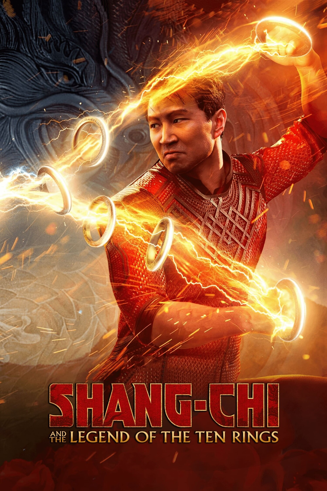

Нещодавно преглянуті фільми, аніме
| Банер | Опис | Оцінка |
ГачіакутаМені сподобалось, бо це аніме має унікальний світ, де навіть сміття може мати цінність. Історія про хлопця, який бореться з несправедливістю, дуже мотивує. Атмосфера темна, але водночас наповнена надією, і персонажі виглядають живими та справжніми. |
9/10 | |
|  |
Шан Чі та легенда десяти кілецьЦей фільм захопив мене поєднанням східних бойових мистецтв, гумору й сімейної драми. Головний герой проходить шлях від звичайного хлопця до справжнього воїна, і це виглядає щиро. Спецефекти, музика та красиві сцени боїв роблять фільм дуже атмосферним. |
8/10 |
 |
Ароматна квітка цвіте з гідністюМені сподобалось, бо це ніжна й щира історія про почуття, які розвиваються поступово. Герої поводяться природно, і їхні емоції легко зрозуміти. Аніме передає тепло, доброту та вчить цінувати щирість у стосунках. |
8/10 |
86Це аніме сподобалось мені глибиною сюжету і сильними персонажами. Воно показує війну не просто як бій, а як трагедію людей, які змушені воювати. Мені сподобалось, як поєднуються емоції, драма та філософські питання про свободу, рівність і ціну життя. |
10/10 |
Гачіакута
Кількість сезонів: 1
Кількість серій: 12
Головні герої:
-
Рудо
Рудо — енергійний і впертий хлопець, який не боїться йти проти несправедливості. Він виріс серед сміття, але зберіг доброту й бажання допомагати іншим. Його сила — не лише у бою, а й у вірі в те, що навіть у брудному світі можна залишитися людиною.
Шан Чі та легенда десяти кілець
Кількість частин: 1
Головні герої:
-
Шан Чі
Шан Чі — майстер бойових мистецтв, який намагається втекти від тіні свого минулого. Він розривається між обов’язком перед сім’єю та власною свободою. Його шлях — це історія про прийняття себе, прощення та відвагу бути іншим, ніж очікують.
Ароматна квітка цвіте з гідністю
Кількість сезонів: 1
Кількість серій: 12
Головні герої:
-
Рінтаро
Рінтаро — хлопчик з суворим обличчям, але добрим серцем, який допомагає в сімейній кондитерській і закохується в Каоруко.
-
Каоруко
Рінтаро — учениця школи для дівчат з вищого класу, яка зустрічає Рінтаро, попри соціальні бар'єри між їхніми школами.
86
Кількість сезонів: 2
Кількість серій: 24
Головні герої:
-
Владилена «Олена» Мілізє
Владилена «Олена» Мілізє — майор республіки Сан-Магнолія, куратор ескадрильї «Спірхед», яка керує Син'еєм за допомогою пара-рейду.
-
Шин
Шин — командир ескадрильї «Спірхед». Він відомий під позывним «Андертейкер» і прозвищем «Жнець смерті» за свій жорстокий, але необхідний обов'язок добивати поранених побратимів, щоб їхні особистості не потрапили в бойові машини Легіону